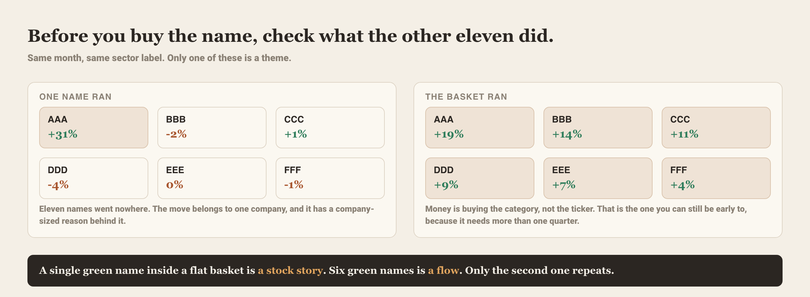
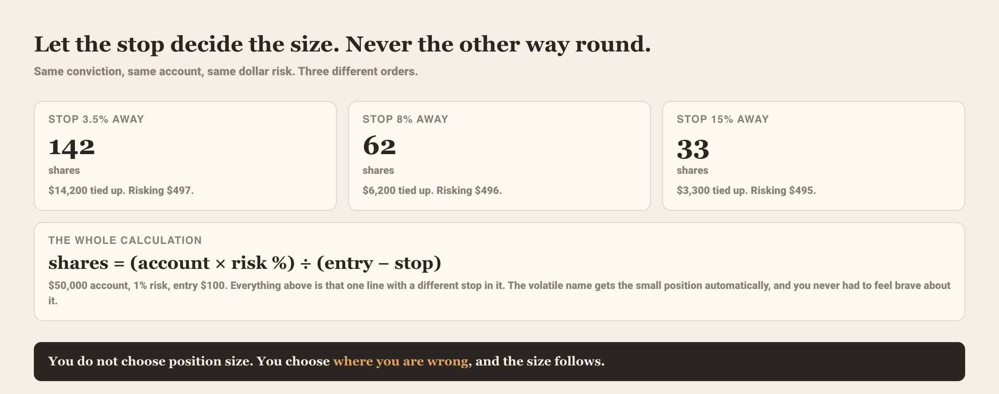
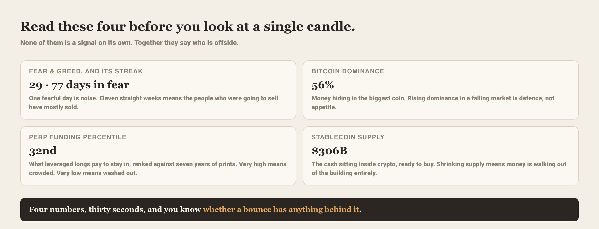

⚡ Viral desk
The single daily posting page, Substack-only: one Copy-for-Notes box per piece,
visuals embedded, everything from tonight's data. The text never pitches; the board and the link
do the selling. Links carry the notes tag, watch what converts in the app's /stats. AI take 48 pieces ready 29 with app proof 2 plugged 15 in feed target 10-15 posted/day
📌 Priority plan · post these 5
- 1. 🏆 $GRRR +13.3% · proof first, receipts sell · pre-open
- 2. 🏆 $BE +13.0% · proof first, receipts sell · pre-open
- 3. 🏆 $BBNX +30.8% · proof first, receipts sell · pre-open
- 4. 📰 $XYL New low · the wire-grade number of the day · pre-open
- 5. 📰 $INOD The stack · the wire-grade number of the day · pre-open
+10 more pieces in the feed below
🏆 Wins
1.
$GRRRflagged October 22+13.3%post before the open
$GRRR hit our Bottom board on October 22.
+13.3% since.
The Bottom board looks for names that have been taken out back and left for dead. This one was 60 percent off its high when it got flagged.
Yahoo was still asking whether Gorilla had finally found a bottom.
It sits at 42 percent of its 52-week high, so this was a bounce off the floor and nothing more yet.
The board flags names like this at every close. Full board is in the app.
$GRRR hit our Bottom board on October 22.
+13.3% since.
The Bottom board looks for names that have been taken out back and left for dead. This one was 60 percent off its high when it got flagged.
Yahoo was still asking whether Gorilla had finally found a bottom.
It sits at 42 percent of its 52-week high, so this was a bounce off the floor and nothing more yet.
The board flags names like this at every close. Full board is in the app.
Attach the app name page, app.thephilosopherinvestor.com/name/GRRR (auto-captured in the next shots batch).
2.
$BEflagged October 23+13.0%post before the open
$BE hit our Earnings Beats board on October 23.
+13.0% since.
Bloom Energy beat earnings by 36 percent and the stock dropped 11 percent anyway the day it printed. That is the reaction the Earnings Beats board is built to catch.
It was 44 percent off its high at the flag. The beat was real, the first move was ugly, and the gain came after.
A hot AI power name that had been stuck in a rut, per Yahoo.
The board flags names like this at every close. Full board is in the app.
$BE hit our Earnings Beats board on October 23.
+13.0% since.
Bloom Energy beat earnings by 36 percent and the stock dropped 11 percent anyway the day it printed. That is the reaction the Earnings Beats board is built to catch.
It was 44 percent off its high at the flag. The beat was real, the first move was ugly, and the gain came after.
A hot AI power name that had been stuck in a rut, per Yahoo.
The board flags names like this at every close. Full board is in the app.
Attach the app name page, app.thephilosopherinvestor.com/name/BE (auto-captured in the next shots batch).
3.
$BBNXflagged October 16+30.8%post before the open
$BBNX hit our Golden Cross board on October 16.
+30.8% since.
Beta Bionics makes an insulin delivery device, and the Golden Cross board caught it as its moving averages crossed up.
It was 28 percent off its high at the flag. Zacks was tagging it as a likely earnings beat right around then.
Up 60 percent over 60 days now and sitting at 67 percent of its high. The cross led the move.
The board flags names like this at every close. Full board is in the app.
$BBNX hit our Golden Cross board on October 16.
+30.8% since.
Beta Bionics makes an insulin delivery device, and the Golden Cross board caught it as its moving averages crossed up.
It was 28 percent off its high at the flag. Zacks was tagging it as a likely earnings beat right around then.
Up 60 percent over 60 days now and sitting at 67 percent of its high. The cross led the move.
The board flags names like this at every close. Full board is in the app.
Attach the app name page, app.thephilosopherinvestor.com/name/BBNX (auto-captured in the next shots batch).
Not in today's queue
$APPNflagged October 5+30.7%post before the open
$APPN hit our Pullback board on October 5.
+30.7% since.
The board flags names like this at every close. Full board is in the app.
$APPN hit our Pullback board on October 5.
+30.7% since.
The board flags names like this at every close. Full board is in the app.
Attach the app name page, app.thephilosopherinvestor.com/name/APPN (auto-captured in the next shots batch).
$CNXCflagged September 30+24.3%post before the open
$CNXC hit our Quiet Accumulation board on September 30.
+24.3% since.
Concentrix runs customer experience and outsourcing operations, the kind of unglamorous name the Quiet Accumulation board likes.
It was 24 percent off its high when the board flagged it.
Yahoo ran two separate why-is-this-up pieces on the same day. The board was already there.
The board flags names like this at every close. Full board is in the app.
$CNXC hit our Quiet Accumulation board on September 30.
+24.3% since.
Concentrix runs customer experience and outsourcing operations, the kind of unglamorous name the Quiet Accumulation board likes.
It was 24 percent off its high when the board flagged it.
Yahoo ran two separate why-is-this-up pieces on the same day. The board was already there.
The board flags names like this at every close. Full board is in the app.
Attach the app name page, app.thephilosopherinvestor.com/name/CNXC (auto-captured in the next shots batch).
📰 Records
Certified extremes computed from our own database (new highs/lows with the exact since-date, day/week/from-the-high stacks, streaks, premium records). Two registers per card: viral and smart.
4.
$XYLNew lowsince October 30as of 2026-10-27post before the open
Xylem just closed at its lowest since October 30, 2023.
A 3-year low.
Down 14.2 percent on the session.
Down 11.6 percent over five sessions.
Now 39.3 percent off its 52-week high.
A boring water-infrastructure name does not fall like this in a day for no reason.
The market found a problem.
A 14.2 percent single-day drop to a 3-year low in a staid industrial name is a fundamental event.
Something changed the story, and a down 11.6 percent week says the selling has momentum.
I stay away until it finds a floor.
Attach your $XYL chart, or the app name page app.thephilosopherinvestor.com/name/XYL. The record does the talking.
5.
$INODThe stackas of 2026-10-27post before the open
$INOD moved -25.3% on the session.
Five sessions: -18.7%.
From its 52-week high: -63.2%.
Attach your $INOD chart, or the app name page app.thephilosopherinvestor.com/name/INOD. The record does the talking.
Not in today's queue
$HRIThe stackas of 2026-10-27post before the open
$HRI moved +22.8% on the session.
Five sessions: +24.5%.
From its 52-week high: -13.8%.
Attach your $HRI chart, or the app name page app.thephilosopherinvestor.com/name/HRI. The record does the talking.
$WSTNew highsince March 14as of 2026-10-27post before the open
$WST closed at 398.29, its highest close since March 14, 2024, a 3-year high.
It now trades +72.5% off its 52-week low.
Five sessions: +2.4%.
Attach your $WST chart, or the app name page app.thephilosopherinvestor.com/name/WST. The record does the talking.
$HUBBVolume recordsince June 28as of 2026-10-27post before the open
$HUBB just traded its heaviest volume since June 28, 2024, 3.9 times its normal pace.
The stock moved -5.5% on that tape.
Attach your $HUBB chart, or the app name page app.thephilosopherinvestor.com/name/HUBB. The record does the talking.
$BAVolume recordsince October 30as of 2026-10-27post before the open
$BA just traded its heaviest volume since October 30, 2024, 7.5 times its normal pace.
The stock moved -10.7% on that tape.
Attach your $BA chart, or the app name page app.thephilosopherinvestor.com/name/BA. The record does the talking.
$NFLXNew lowsince August 7as of 2026-10-27post before the open
$NFLX closed at 62.52, its lowest close since August 7, 2024, a 2-year low.
It now sits -46.0% from its 52-week high.
Five sessions: -9.0%.
Attach your $NFLX chart, or the app name page app.thephilosopherinvestor.com/name/NFLX. The record does the talking.
$RBRKStreaksince July 23as of 2026-10-27post before the open
$RBRK has now closed up 7 sessions in a row, +20.8% over the run.
Last streak this long ended July 23, 2026.
Attach your $RBRK chart, or the app name page app.thephilosopherinvestor.com/name/RBRK. The record does the talking.
🎯 Callouts
6.
$TSLAcalls bid+4.0%options through 2026-10-27post before the open
$1.0B in $TSLA calls today. biggest single name on the whole tape and the stock barely reacted.
$1.0B in $TSLA calls today. biggest single name on the whole tape and the stock barely reacted.
A billion dollars in calls while the stock moved a measured 4.0 percent. That size is positioning for a bigger move.
TSLA is up 36.6 percent over 63 days and running 31.1 points ahead of the S&P, still 18.3 percent off its high.
Strength with room left. I respect the flow here.
A billion dollars in calls while the stock moved a measured 4.0 percent. That size is positioning for a bigger move.
$TSLA is up 36.6 percent over 63 days and running 31.1 points ahead of the S&P, still 18.3 percent off its high.
Strength with room left. I respect the flow here.
 ⬇ Download image
⬇ Download imageReady-made card, post it as-is. The tape does the selling.
7.
$AMDcalls bid+5.5%options through 2026-10-27post before the open
$649M in $AMD calls today. second biggest flow on the board behind tesla and this one keeps running.
$649M in $AMD calls today. second biggest flow on the board behind tesla and this one keeps running.
649 million in calls and a 5.5 percent pop. The flow and the price agree for once.
AMD is up 30.4 percent over 63 days, 24.9 points ahead of the S&P, and still 14.9 percent below its high.
A trend getting fresh fuel. Cleanest chart on the flow board.
649 million in calls and a 5.5 percent pop. The flow and the price agree for once.
$AMD is up 30.4 percent over 63 days, 24.9 points ahead of the S&P, and still 14.9 percent below its high.
A trend getting fresh fuel. Cleanest chart on the flow board.
 ⬇ Download image
⬇ Download imageReady-made card, post it as-is. The tape does the selling.
8.
$AAPLcalls bid+0.9%options through 2026-10-27post before the open
$320M in $AAPL calls and apple basically sat there. big premium on a flat tape usually means somebody is early.
$320M in $AAPL calls and apple basically sat there. big premium on a flat tape usually means somebody is early.
320 million in calls and the stock barely moved, up 0.9 percent. That is patient money early.
AAPL sits just 1.3 percent off its high but lags the S&P by 2.9 points over 63 days.
Pinned near highs with soft relative strength. The calls are betting on a catch-up.
320 million in calls and the stock barely moved, up 0.9 percent. That is patient money early.
$AAPL sits just 1.3 percent off its high but lags the S&P by 2.9 points over 63 days.
Pinned near highs with soft relative strength. The calls are betting on a catch-up.
 ⬇ Download image
⬇ Download imageReady-made card, post it as-is. The tape does the selling.
🏛 Congress/Whales
9.
Whale movepost before the open
Public Investment Fund (Saudi PIF) opened a brand new position in $SPCX last quarter.
Size: $26B.
Fresh from the filings.
 ⬇ Download image
⬇ Download imageThe app page behind it. Post as-is.
🔀 What changed
10.
Breadth regime flipped2026-10-27post before the open
Here is something that does not happen quietly if you know where to look.
On October 27 the market's breadth regime flipped from DEFENSIVE to CAUTIOUS, with the score jumping from 35 to 51.
In plain terms, more stocks started carrying their own weight instead of leaning on a handful of giants.
It is still only at cautious, one notch off the floor.
Watch whether the score keeps climbing from here or stalls out and slides back toward defensive.
 ⬇ Download image
⬇ Download imageThe app page that shows it. Post as-is.
Archive · 21 past items, reusable
Insider buy: LEN2026-10-26
Berkshire Hathaway just put 246.5 million dollars of its own money into Lennar, the homebuilder, on Monday, Oct 26.
When a 10 percent owner buys that much with real cash, it is worth asking why they like housing here, with mortgage rates where they are.
I would watch whether other insiders follow or whether this is a solo conviction buy.
https://app.thephilosopherinvestor.com/insiders?utm_source=notes
Screenshot to attach: the app page /insiders. Check the facts still hold before posting.
The Quiet Accumulation board lit up2026-10-26
85 names hit the Quiet Accumulation board at Monday's close that were absent the session before.
https://app.thephilosopherinvestor.com/screeners?view=changes&utm_source=notes
Screenshot to attach: the app page /screeners?view=changes. Check the facts still hold before posting.
The Golden Cross board lit up2026-10-26
68 names hit the Golden Cross board at Monday's close that were absent the session before.
https://app.thephilosopherinvestor.com/screeners?view=changes&utm_source=notes
Screenshot to attach: the app page /screeners?view=changes. Check the facts still hold before posting.
Insider buy: KOD2026-10-23
Baker Bros is one of the sharpest biotech funds on the planet, and they just bought $157.0M of Kodiak Sciences on the 23rd, wearing both a director and a 10% owner hat. Kodiak is an eye-disease biotech, the kind of binary name that lives and dies on trial data. A buy this size from someone who sits on the board is a bet on what the clinic prints next. Watch the data.
https://app.thephilosopherinvestor.com/insiders?utm_source=notes
Screenshot to attach: the app page /insiders. Check the facts still hold before posting.
Insider buy: CRBG2026-10-23
Here is one worth a look. Nippon Life, a 10% owner of Corebridge Financial, put $225.7M of its own money into the stock on the 23rd. That is Japan's largest life insurer adding to a US annuity and retirement business it already owns a piece of. When a strategic holder that size buys more instead of trimming, it usually likes the yield math. Watch whether the filing pulls other insiders in behind it.
https://app.thephilosopherinvestor.com/insiders?utm_source=notes
Screenshot to attach: the app page /insiders. Check the facts still hold before posting.
Congress bought EL2026-10-19
Jonathan Jackson (House) just disclosed buying EL, $50,001 to $100,000, traded on 2026-09-28.
https://app.thephilosopherinvestor.com/congress?utm_source=notes
Screenshot to attach: the app page /congress. Check the facts still hold before posting.
Congress bought DDOG2026-10-19
A House member, Jonathan Jackson, just disclosed buying Datadog, with the trade dated September 28.
Datadog is the software companies use to watch their cloud systems and catch outages before customers do.
Congressional trades get disclosed weeks late, so the signal is which way they lean. Watch whether more filings start clustering into software.
https://app.thephilosopherinvestor.com/congress?utm_source=notes
Screenshot to attach: the app page /congress. Check the facts still hold before posting.
The Volume Leaders board lit up2026-10-21
The Volume Leaders board filled up at Wednesday's close with 30 names that were absent the session before.
Volume Leaders means unusual activity, far more shares changing hands than normal.
Thirty fresh names in a single day is a crowd suddenly showing up somewhere.
When that many light up at once, I look for the sector they share the next morning.
https://app.thephilosopherinvestor.com/screeners?view=changes&utm_source=notes
Screenshot to attach: the app page /screeners?view=changes. Check the facts still hold before posting.
Congress bought NOKBF2026-10-16
Here is one worth a look. The buy itself happened last month, so you are seeing it with the usual lag that congressional reporting runs on. One mid-size purchase is just a data point. Watch whether other members turn up in the same name when the next filings drop.
https://app.thephilosopherinvestor.com/congress?utm_source=notes
Screenshot to attach: the app page /congress. Check the facts still hold before posting.
The Unusual Puts board lit up2026-10-16
155 names hit the Unusual Puts board at Friday's close that were absent the session before.
https://app.thephilosopherinvestor.com/screeners?view=changes&utm_source=notes
Screenshot to attach: the app page /screeners?view=changes. Check the facts still hold before posting.
Breadth regime flipped2026-10-16
The market's breadth regime flipped from CAUTIOUS to DEFENSIVE at the close, score 50 to 17.
https://app.thephilosopherinvestor.com/economy?utm_source=notes
Screenshot to attach: the app page /economy. Check the facts still hold before posting.
Congress bought NXPI2026-10-12
Same representative, same filing, a second buy.
NXP is a chipmaker, and a congressional buy in semis lands the same week the whole group is getting sold hard.
Early or just contrarian, the filing is now on the record.
https://app.thephilosopherinvestor.com/congress?utm_source=notes
Screenshot to attach: the app page /congress. Check the facts still hold before posting.
Congress bought BHE2026-10-12
A member of Congress just put money to work in the market.
It is a small ticket by Washington standards. The interesting part is the timing, buying into early October weakness.
Worth a look at what else shows up in his next filing.
https://app.thephilosopherinvestor.com/congress?utm_source=notes
Screenshot to attach: the app page /congress. Check the facts still hold before posting.
The Bottom board lit up2026-10-13
The Bottom board lit up on Tuesday, Oct 13, with 151 names that were absent the session before.
That is a lot of charts hitting capitulation at once, which tends to happen when a whole slice of the market gets flushed in a single day.
One name washing out is noise. A hundred and fifty one is a sector or two getting tossed overboard.
Watch which groups they cluster in.
https://app.thephilosopherinvestor.com/screeners?view=changes&utm_source=notes
Screenshot to attach: the app page /screeners?view=changes. Check the facts still hold before posting.
The Pullback board lit up2026-10-12
At Monday's close, 153 names showed up on the Pullback board that were absent the session before.
That is a flood. Pullbacks are uptrending stocks taking a breather, and 153 of them hitting at once means a lot of strong charts dipped together on the same day.
Either Tuesday they bounce and those dips were gifts, or they keep sliding and the uptrends were weaker than they looked.
Watch how many hold their lines.
https://app.thephilosopherinvestor.com/screeners?view=changes&utm_source=notes
Screenshot to attach: the app page /screeners?view=changes. Check the facts still hold before posting.
Insider buy: RSG2026-10-09
On October 9, Cascade Investment, the firm that manages Bill Gates's money, bought 288.9M dollars of Republic Services with its own cash.
Cascade already owns more than 10% of the garbage hauler, and it just wrote a nine-figure check to own more.
When the people who already control a company keep buying, it is worth knowing which company. This one picks up America's trash.
Watch whether the next filing shows more buying behind it.
https://app.thephilosopherinvestor.com/insiders?utm_source=notes
Screenshot to attach: the app page /insiders. Check the facts still hold before posting.
Congress bought SNOW2026-10-07
A member of Congress, Maria Elvira Salazar, just disclosed buying Snowflake stock.
The trade happened back on September 4 and only surfaced October 7, which is how the disclosure window works.
Still worth knowing who in Washington is buying the data-cloud names while they write the rules around them.
https://app.thephilosopherinvestor.com/congress?utm_source=notes
Screenshot to attach: the app page /congress. Check the facts still hold before posting.
Insider buy: GPI2026-10-05
Conifer Management put $179.0M into Group 1 Automotive on October 5, and they already own more than 10% of the company.
People buying nine figures of a stock they are this exposed to usually think it is cheap.
Group 1 runs car dealerships, the unglamorous kind of business that throws off real cash.
Watch whether other insiders follow them in.
https://app.thephilosopherinvestor.com/insiders?utm_source=notes
Screenshot to attach: the app page /insiders. Check the facts still hold before posting.
Insider buy: GME2026-10-02
Ryan Cohen just put $17.1M of his own money into GameStop stock on Friday, Oct 2.
When the chairman and CEO buys this size in the open market, he is telling you he thinks the stock is cheap right here.
Insider buys are the one signal with no spin behind them, he only gets paid if it goes up.
I would watch whether anything else on the board follows his lead.
https://app.thephilosopherinvestor.com/insiders?utm_source=notes
Screenshot to attach: the app page /insiders. Check the facts still hold before posting.
Insider buy: PBLSX2026-09-29
Bluearc Capital Management just bought 164.4 million dollars of PBLSX, and they already held more than 10 percent of the company.
That is a major holder doubling down with its own cash, the kind of buy that says someone close to the business sees value at these levels.
Watch whether other insiders follow the filing in.
https://app.thephilosopherinvestor.com/insiders?utm_source=notes
Screenshot to attach: the app page /insiders. Check the facts still hold before posting.
Insider buy: MAIR2026-09-25
Bertarelli Ernesto (10%) bought $219.0M of MAIR with their own money.
https://app.thephilosopherinvestor.com/insiders?utm_source=notes
Screenshot to attach: the app page /insiders. Check the facts still hold before posting.
📊 Boards
11.
Quiet Accumulation boardEOD 2026-10-27post before the open
Four of the five sat within half a percent either way, dead flat on the session.
One name broke from the pack with a 4.5 percent move.
That tight, sleepy spread is exactly what accumulation looks like. Size goes in while the tape stays quiet, before price tells anyone.
The group skews small and consumer-facing, off to the side of the megacap bid that carried the index.
With breadth running 3460 to 1860, there is a current to lift this kind of name once it gets going.
Wednesday the tell is whether that 4.5 percent mover holds and a second name follows it out of the base.
A quiet board that starts posting green is the first sign accumulation is turning into a move.
The quiet accumulation board barely moved and that is the whole point.
WING up 0.5 percent.
JAKK up 0.4 percent.
BRCB up 4.5 percent and the rest flat.
This is where size goes in before the move, while nobody is watching the tape.
Boring until it is not.
 ⬇ Download image
⬇ Download imageToday's board, straight from the app. Post as-is.
🚀 Features
12.
Asset deep dives on the commodity radarshipped 2026-08-24post anytime
New in the app: Asset deep dives on the commodity radar.
You can now open any ETF on the commodity radar and get a full macro note on it.
Pull up gold or oil and see how it trades against the S&P, what the options tape is saying, who the marginal buyer looks like, and the releases that could move it next.
Written fresh every night from our own data, so you walk in already knowing the setup.
 ⬇ Download image
⬇ Download image✍️ Ready-to-post essays
Evergreen posts written from the latest close, one per proven template (Typeshare / Content OS). Post as-is or edit.
13.
How To GuideessayBANKEOD 2026-10-27post anytime
How to read a red day, step by step:
1. Look at what refused to go down. Strength that holds on a weak tape is real strength.
2. Look at what led the selling. Yesterday's leaders cracking is a different market than laggards bleeding.
3. Look at the close, then the reaction to the close. Panic that gets bought tells you more than the panic itself.
The trap: judging the day at its low, then never updating.
The tape grades the day at the bell. So should you.
14.
Never Been EasieressayBANKEOD 2026-10-27post anytime
The most expensive mistake in a drawdown:
Sizing up to win it back faster.
Why everyone makes it: the math feels helpful. Double the size, half the time to recover.
What it costs: the same losing streak that created the hole now digs it twice as fast.
What works instead:
- Cut size when you are cold
- Earn it back one normal trade at a time
- Let the streak end before you lean in again
Recovery is a patience trade. Treat it like one.
Not in today's queue
Old Way / New WayshortEOD 2026-10-27post anytime
How to spot where the big money is positioning.
Old way:
Wait for the 13F filings, read them weeks late, and guess what the fund did after the quarter already closed.
New way:
Watch the options tape in real time. When a billion dollars in calls prints on one name, you see the bet the day it happens.
What changed: the size shows up now, while it still matters.
The Weekly ReviewengagementEOD 2026-10-27post anytime
I review my trades every week.
The questions I ask:
- Did I take the setup that was there, or the one I wanted to see?
- Did I size by my rules or by my mood?
- Which loss was the plan working, and which was me breaking it?
How do you review your trades?
🔌 PLUG THIS ONE
When this Note picks up steam, reply to it with:
My system screens 3,000+ US stocks every session. The best of what it surfaces goes in the letter.
Free here: https://philosopherinvestor.substack.com/subscribe
Blank templates (fill one by hand)
Essays (90-180 words, ABDCE 250-400)
Mistakes & Lessons
The most expensive mistake in {situation}:
{the mistake}
Why everyone makes it: {reason it feels right}
What it costs: {consequence}
What works instead:
- {practice 1}
- {practice 2}
- {practice 3}
{one line that locks the lesson}
Myths
"{the myth}"
You hear it everywhere.
Here is why it spreads: {reason}
And here is what the tape actually shows: {observable reality}
{implication for how you trade}
How To Guide
How to {specific outcome}, step by step:
1. {step}
2. {step}
3. {step}
The trap: {common way people ruin it}
{closing push}
Category POV
Most traders believe {consensus}.
I believe {your view}.
The difference: {what each belief makes you do}
{what you do differently because of it}
5 Main Points
{the idea}, in 5 points:
1. {point}
2. {point}
3. {point}
4. {point}
5. {point}
{the conclusion they add up to}
ABDCE Story
{open inside the action, one vivid market moment}
{background: how the setup built}
{development: what unfolded, tension rising}
{climax: the day it broke}
{ending: what it teaches about the current tape}
Top 1% Traits
Traits of the traders who last:
- {trait}: {why}
- {trait}: {why}
- {trait}: {why}
And the one nobody expects: {twist trait}
Top 1% Reminders
Reminders about the top 1% of traders:
- {public fact}
- {public fact}
- {public fact}
{what this means for your expectations}
Never Been Easier
It has never been easier to {outcome}.
{what used to be locked away}
{what is now open to anyone}
The catch: {where the real edge lives now}
Elite Action Takers
{the small action} takes {small time}.
Almost nobody does it.
{what doing it compounds into}
{what skipping it costs}
Start today: {first step}
Top Product Checklist
Before you trust any market tool, check:
- {requirement}
- {requirement}
- {requirement}
- {requirement}
Most fail on {the usual failure}.
{light closing line}
Short tips (30-80 words)
The Biggest Mistake
The biggest mistake in {situation}:
{mistake}
Instead:
- {action}
- {action}
- {action}
{outcome line}
Do These 5 Things
If you are {situation}, stop {harmful reflex}.
Do these 5 things:
- {thing}
- {thing}
- {thing}
- {thing}
- {thing}
{what the practice protects}
Old Way / New Way
How to {task}.
Old way:
{the grind}
New way:
{the current path}
{one line on what changed}
You Don't Need X
You don't need {overrated thing}.
Go find {what matters}.
{one line on why the swap wins}
99% Don't Do This
99% of traders never {practice}.
Why: {reason they skip it}
The 1% who do get {payoff}.
{invitation line}
If You're This, Remember
If you are {specific spot}, remember:
{the reminder}
{one line of steadying context}
Do These 3 Things
Before the next open, do 3 things:
1. {thing}
2. {thing}
3. {thing}
{what they add up to}
Things Needed To Do X
Everything you need to {outcome}:
- {real requirement}
- {real requirement}
- {real requirement}
Everything you don't: {the fake requirements}
Lessons From The Tape
3 lessons from this week's tape:
1. {lesson from a real move}
2. {lesson from a real move}
3. {lesson from a real move}
{the thread that ties them}
Engagement (30-70 words)
The Weekly Review
I review my {topic} every week.
The questions I ask:
- {question}
- {question}
- {question}
How do you review {topic}?
🔍 Inside the app
Teasers for the public articles page, which teaches a method and shows the screen that runs it. Evergreen, so post them any day the queue is thin.
15.
🔍 How I read a theme instead of a stock/themesevergreen
A single name will lie to you about how strong an idea is. Eleven names beside it will not.
A green name inside a flat basket is a stock story. Six green names is a flow, and only the second one repeats.
I wrote up how I actually do it, with the screen that runs it at every step.
https://signalpluspro-67.github.io/c-a22104a111/app_articles.html#read-the-basket

Links to the public article, which links to /themes. Nothing in it expires.
Not in today's queue
🔍 How I size a position/positionsevergreen
Bad setups cost you a trade. Bad sizing costs you the account. Only one of those two is fully in your hands.
You do not choose position size. You choose where you are wrong, and the size follows.
I wrote up how I actually do it, with the screen that runs it at every step.
https://signalpluspro-67.github.io/c-a22104a111/app_articles.html#size-from-the-stop

Links to the public article, which links to /positions. Nothing in it expires.
🔍 How I read crypto without opening a chart/cryptoevergreen
Price tells you what the last trade was. It says nothing about who is left to trade.
The fear and greed streak carries more information than its level. Eleven weeks means the sellers have largely gone.
I wrote up how I actually do it, with the screen that runs it at every step.
https://signalpluspro-67.github.io/c-a22104a111/app_articles.html#crypto-without-a-chart

Links to the public article, which links to /crypto. Nothing in it expires.
🧭 Sectors and sub-sectors
Sector mapEOD 2026-10-27post before the open
The relative-strength line on Industrials crossed up one session ago and the price chart has barely reacted.
Acceleration turned positive at 1.66 with the cross only a day old. That is the early window, before the tape agrees.
Energy is the mirror image, stretched and rolling. XLE fell 2.1 percent with acceleration at -1.14 after leading for two months.
Materials already ran this play, riding at 4.61 acceleration since it crossed 10 sessions back.
Breadth supports a handoff, 3460 advancers to 1860 with the VIX calm at 17.5.
The rate market still prices a hike at 77 percent, which keeps the heat on long-duration growth and favors cyclicals.
The money walking out of energy needs a home, and industrials just raised its hand.
XLE down 2.1 percent.
Acceleration rolled to -1.14.
Industrials crossed up one session ago, acceleration turning positive at 1.66.
The rotation is happening while the energy longs are still patting themselves on the back.
Money is changing seats.
 ⬇ Download image
⬇ Download imageDownload the map and attach it. The rotation does the talking.
Sub-sector mapEOD 2026-10-27post before the open
Semiconductor Equipment & Materials sits at -20.1 on 20-day relative strength and -16.6 on 60-day, so the pain is getting worse on the near window.
Only 7 percent of the group holds above its 50-day line.
The 20-day advance-decline ran -93, which means almost every name in it is red.
This is the capex-sensitive end of semis, the tool makers, and it tends to roll first when orders cool.
XLK still closed up 1.7 percent, carried by the big chip and software names.
So the index strength is papering over a crack in the supply chain.
Wednesday the tell is whether the equipment names find a floor or keep sliding while the headline semis hold.
If the tools keep bleeding, the broad chip bid is running on borrowed breadth.
The weakest corner of the market right now is semiconductor equipment.
Relative strength down 20.1 percent over 20 days.
Only 7 percent of the group above its 50-day line.
Advance-decline at -93, almost every name red.
The tools go first.
 ⬇ Download image
⬇ Download imageDownload the map and attach it. The rotation does the talking.
🧬 Themes
Memory Layers Aias of 2026-10-28
The chips get all the attention and the memory around them is where this week's money went.
The thesis is plain: the fastest AI processor stalls without the memory bandwidth to feed it, and the market is finally paying the storage names for it.
NTAP leads, up 8.4 percent on the week and 11.3 on the month, with a relative-strength rank pinned at the top of the basket.
DELL and HPE rode along, so the move is broad across the hardware names.
Zacks noted on October 27 that NetApp was beating the market, the kind of coverage that lands after the move is underway.
The catalyst is the memory bandwidth bottleneck, a structural pull that outlasts any single quarter.
Here is the turn. The basket looks strong on the surface, and underneath the options flow has gone quiet, recent reads at 2 against a baseline of 3.
Price up, flow cooling. The fast money already positioned and is waiting for the next proof.
So this reads mid-move. The easy entry was a week ago.
Memory is the pick-and-shovel trade on AI compute, and it works as long as the hyperscaler capex story holds.
Wednesday the tell is whether the storage names extend or the fading flow pulls price back.
If flow stays light while price climbs, you are paying retail for a trade the desk already took.
Memory just became the AI trade nobody was pricing.
NTAP up 8.4 percent on the week, 11.3 percent on the month.
The whole storage basket up 2.4 percent on the week.
A relative-strength rank pinned at the top.
The chips get the headlines and the memory feeding them is where this week's money actually went.
Bandwidth is the bottleneck now.
 ⬇ Download image
⬇ Download imageDownload the board and attach it. The basket does the selling.
Cybersecurityas of 2026-10-28
Every name in this group is working at once, which is rare enough to notice.
Cybersecurity ran 13.5 percent on the week with breadth at 84.6, so almost the whole basket is moving, no single hero carrying it.
The mechanism is a budget that survives recessions. When companies cut, security is the last line they touch, because a breach costs more than the software does.
RBRK leads, up 18.5 percent on the week, and it has strung together a run of green closes.
Zacks tagged Rubrik a top momentum name on October 27, the confirmation that lands once a stock is already extended.
Now the turn. The surface could not look stronger, and underneath the options flow has collapsed, recent reads at 2 against a baseline of 6.
That gap is the tell. Broad price strength with flow drying up is how a late-stage move looks, the chase with no fresh fuel behind it.
So I read this as late. The moment to buy the breadth was before the whole board went green.
It fits the macro, too. With growth multiples under pressure from high rates, money wants secular revenue that does not lean on cheap money, and security delivers that.
Wednesday the tell is whether the leaders hold or the vanished flow lets a first red day run.
A long green streak with no flow behind it sets up a sharp snapback.
🔌 PLUG THIS ONE
When this Note picks up steam, reply to it with:
The board that flagged this is live in the app, with every level on the chart.
https://app.thephilosopherinvestor.com/?utm_source=notes&utm_content=plug-d9315f1630
 ⬇ Download image
⬇ Download imageDownload the board and attach it. The basket does the selling.
Robotics Humanoidas of 2026-10-28
This theme has a lot of names and one engine.
Robotics and humanoids barely moved as a group this week, and TSLA did the lifting, up 9.0 percent on the week with a relative-strength rank at the top of the basket.
The mechanism is still a promise. Figure AI at a 39 billion dollar valuation is in pilot phase, with the first real commercial deployments pegged to the next couple of years.
That is the timing tell. You are buying a product that ships later, so the move runs on narrative and capex ahead of shipped units.
The flow confirms the Tesla-is-everything read. 1.0 billion dollars in TSLA calls hit the tape, with AMD drawing 649 million behind it.
Here is the nuance. The basket flow velocity is flat at 2 against a baseline of 2, so there is no acceleration underneath, no rush of new money into the broader group.
The strength is concentrated. One name carries it and the rest tag along.
So this reads as a Tesla trade wearing a theme costume. If you like it here, you like Tesla here.
It ties to rates, since a long-duration bet on robots years out gets pricier as long rates sit near generational highs.
Wednesday the tell is whether that billion in Tesla calls shows up in price, or the rest of the basket keeps leaning on one stock.
A theme carried by a single engine breaks the day that engine stalls.
 ⬇ Download image
⬇ Download imageDownload the board and attach it. The basket does the selling.
All themes tonight
Every basket by heat, with its hottest name. No take, just the tape.
The Five Layers of Memory (AI) heat 60 DELL +8.8%
Cybersecurity heat 59 TENB +24.8%
Robotics & Humanoid heat 56 TSLA +9.0%
Trump's Personal Portfolio heat 55 LMT +13.5%
Defense & Drone Warfare heat 54 LMT +13.5%
The Space Race heat 49 FLY +22.0%
Founder-Led heat 45 CRWD +17.9%
Quantum Computing heat 43 ARQQ +17.8%
Digital Health heat 39 GH +9.5%
Semiconductors heat 38 TXN +11.2%
Iran Regime Change & Sanctions Unwind heat 37 STNG +5.6%
Photonics heat 32 LITE +5.3%
FinTech heat 32 SOFI +11.7%
Energy (Beyond the Grid) heat 29 ORA +5.4%
Autonomous Vehicles heat 28 OUST +10.6%
AI Agents heat 28 BBAI +8.3%
Recent IPOs (2024-2026) heat 28 FLY +22.0%
Critical Minerals heat 25 MP +4.7%
Crypto heat 24 WULF +5.4%
Nuclear Energy heat 22 DNN +5.3%
Air Taxis heat 22 BLDE +11.6%
Rare Earth Elements heat 21 UAMY +6.1%
Solar Energy heat 20 JKS +3.1%
Drones heat 20 UMAC +9.1%
Batteries heat 19 ENVX +48.9%
🏦 FRED macro
10-year Treasury yielddata through 2026-10-2699th pctile
The ten-year Treasury yield just touched 5 percent.
That is the interest rate that quietly sets the price of almost everything you borrow.
Your car loan, your credit card, the rate your employer pays to expand and hire. They all take their cue from this one number.
It is up a full point over the past year and sits at the 99th percentile of its own history, meaning it has almost never been higher.
Money is expensive right now, and the trend has been toward more expensive.
Watch whether 5 percent holds as a ceiling or becomes the new floor. That line decides a lot of mortgages and a lot of hiring plans.
My morning board: https://app.thephilosopherinvestor.com/?utm_source=notes
 ⬇ Download image
⬇ Download imageDownload the chart and attach it. Real FRED data, our frame.
10y real yielddata through 2026-10-2699th pctile
Strip out inflation and lenders still earn 2.66 percent on a ten-year loan to the government.
That is the real yield, what is left after rising prices eat their share.
Why you should care. When the government pays you that much to do nothing, every risky bet has to beat it. Stocks, housing, your cousin's startup, all of it competes with a safe 2.66 percent.
It is up nearly a point in a year and sits at the 99th percentile of its range.
Safe money has not paid this well in a very long time.
Watch this if you are deciding between parking cash and taking a risk. The bar just got higher.
My morning board: https://app.thephilosopherinvestor.com/?utm_source=notes
 ⬇ Download image
⬇ Download imageDownload the chart and attach it. Real FRED data, our frame.
30-year mortgage ratedata through 2026-10-2299th pctile
The average 30-year mortgage rate just printed 7.32 percent.
If you are trying to buy a house, that is the number that decides what you can afford.
On a normal mortgage, a rate like that roughly doubles the sticker price of the home over the life of the loan in interest alone.
It is up 1.1 points over the past year and sits at the 99th percentile of its history, so borrowing to buy a home has almost never cost more.
It also climbed 0.8 of a point in just the last three months, which is the fast part.
Watch the next three months. A rate moving this quickly is what freezes a housing market, buyers and sellers waiting each other out.
My morning board: https://app.thephilosopherinvestor.com/?utm_source=notes
 ⬇ Download image
⬇ Download imageDownload the chart and attach it. Real FRED data, our frame.
🎲 Polymarket
Polymarket77% yesodds snapshot 2026-10-28
The prediction market still prices another Fed rate hike this year at 77 percent.
Sit with that against a tape that just rallied, QQQ up 1.3 percent, tech leading.
The second read is the drift. That 77 has come off 3.5 points over the last week, so the certainty is leaking even as it stays high.
Here is who is offside. Anyone long growth stocks for a pivot to rate cuts is fighting a market that thinks the next move is still up.
With the ten-year already at 5 percent, the market treats a hike as the base case.
Wednesday the tell is any Fed speak that nudges that 77 percent. Crack it toward 70 and the rate-cut crowd gets a little oxygen. Hold it and growth stays on defense.
My morning board: https://app.thephilosopherinvestor.com/?utm_source=notes
 ⬇ Download image
⬇ Download imageThe real Polymarket page. Post it as-is.
Polymarket35% yesodds snapshot 2026-10-28
The odds of a US recession by the end of 2027 sit at 35 percent.
Now look at the near term. A recession by the end of 2026 is priced at just 7.5 percent, almost nothing.
So the market says the next twelve months are fine and the trouble, if it comes, waits until later.
The second read is the calm. That 35 percent barely moved this week, down half a point, while the ten-year sits at 5 percent and the mortgage rate at 7.32.
Anyone bracing for an imminent slowdown is fighting a crowd that sees clear skies into next year.
The risk there is complacency. Rates this high tend to bite with a lag, and the bill usually arrives after people stop watching for it.
Watch the longer-dated odds. A move in that 35 percent is the market pulling the pain forward.
My morning board: https://app.thephilosopherinvestor.com/?utm_source=notes
Screenshot the live market page on polymarket.com before posting (the odds must match the text).
🏛 The Polymath
Polymath 1
QQQ up 1.3 percent is the headline the internals do not quite earn.
Advancers beat decliners 3460 to 1860, which reads healthy.
Then you look at the extremes. 141 new 52-week highs against 120 new lows, almost a tie on a day the Nasdaq ripped.
The thing moving underneath is the breadth regime, which flipped from DEFENSIVE to CAUTIOUS at the close, score 35 to 51. A low base getting better, slowly.
Anyone reading a 1.3 percent tech day as a broad green light is leaning on four or five names.
Wednesday the test is simple. New highs have to pull away from new lows. If they stay glued together, the index is renting its gains from megacap.
 ⬇ Download image
⬇ Download imageThe app's Market monitor, embedded by default. Post as-is.
Visual to attach (alternative): A line chart of daily new 52-week highs minus new lows plotted against the QQQ close over the past month.
Polymath 2
XLE fell 2.1 percent, the worst sector on the board.
The 60-day relative strength still reads 14.4, so the trend looks fine from a distance.
Up close it is tiring. Acceleration turned negative at -1.14 on a sector that is already stretched, which is how leadership ends, slowly then at once.
The E&P names have not cracked yet. 82 percent of them were still advancing over the last 20 days.
Late longs who bought energy as the easy momentum trade are the ones exposed here.
⬇ Download imageThe app's Market monitor, embedded by default. Post as-is.
Visual to attach (alternative): XLE price with its 60-day relative-strength line above and a 10-day acceleration histogram below.
Polymath 3
VIX at 17.5 says the tape is calm.
The dealer map says the fuel is sitting right there.
SPY closed at 769.66, about 1.8 percent under its gamma flip at 783.98. QQQ and IWM are below their flips too.
Below that line dealers amplify moves instead of smoothing them. A real push runs instead of fading into the close.
So you have a quiet 17.5 VIX sitting on top of a structure built to move fast the moment price picks a direction.
The people short volatility for the carry are on the wrong side of that.
Wednesday the number that matters is 783.98 on SPY. Reclaim it and dealers start chasing the rally instead of selling it.
⬇ Download imageThe app's Market monitor, embedded by default. Post as-is.
Visual to attach (alternative): SPY spot versus its zero-gamma flip at 783.98 with the VIX plotted underneath.
😂 Memes


Generated 2026-10-28 07:20 UTC · rebuilt every market morning (fresh shots) and every
market evening after the close (fresh data; one claude call per EOD, cached). House rules:
published numbers come from our own EOD data, losers are published too.